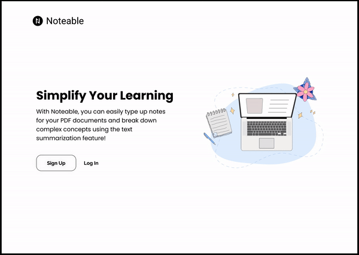
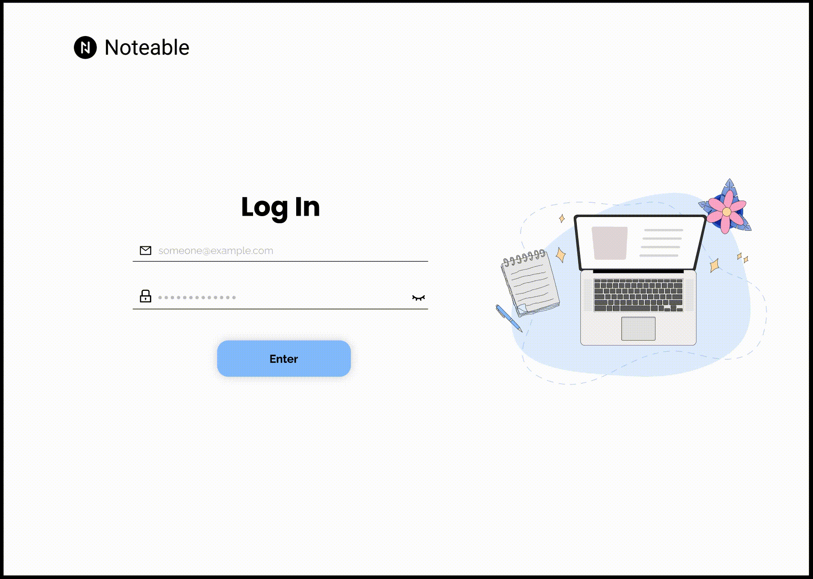
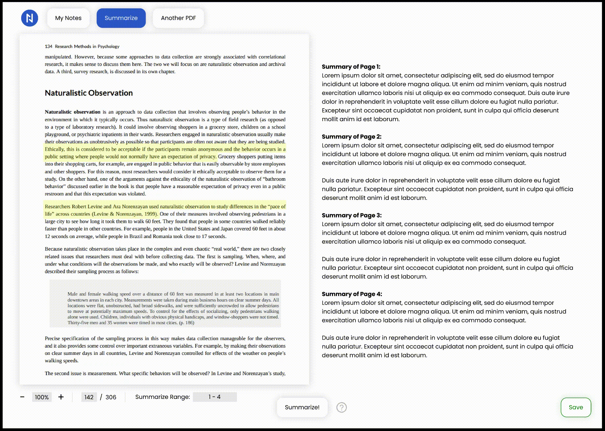

UX Design | July-October 2021
Noteable is a web app that improves dense reading experiences by allowing users to easily take quick notes, as well as auto generate summaries given a long paragraph.
Ideation sessions with client, information architecture, low-fi and high-fi wireframe, prototype design
Figma and Miro
Emily Song (UX Designer) and Shikha Kandpal (Project Manager)
How might we improve people's reading experiences of dense texts?
Speaking with our client, we ideated several main functionalities to help us visualize what will be required for Noteable. The following is what we came up with :
The client had their own initial design of the product going into ideation but they wanted a complete redesign. The following is what they've shown as an initial concept:


I made an empathy map to better understand how our users may say, feeling, think, and want when faced with a large reading of text. I imagine putting myself into that situation and how I may also feel.

Using the empathy map, I then identified a few pain points that users may experience when trying to read dense texts.

To visualize how user flows may be through Noteable, I created an information architecture to map out where each screen would be located within the full user experience.

Based on the information architecture, I then made a few low-fidelity wireframes to see how design elements can be placed within each main screen of Noteable.


After the low-fidelity wireframes, I had several iteration sessions to create the final high-fidelity wireframes.


.png)

.png)
.png)
Sign-up | Users can create an account
Log-in and File Selection | Users can access their account and past files
Annotation | Users can take notes and annotate PDF files

Summarization | Users can generate AI summaries of PDF pages, and edit summaries as needed

Multi-file Selection | Users can access past files and select new texts to work with

This project was the first time I had an opportunity to go through a full design process with a client specifying their needs throughout the experience.
I learned that getting a client's input on the design as well as adjusting our product to better reflect their needs is critical to a solution's success.
In addition, a client may understand what they want but not necessarily how to move towards that goal, so it was very rewarding to work
with them to find out how a solution can meet their needs.